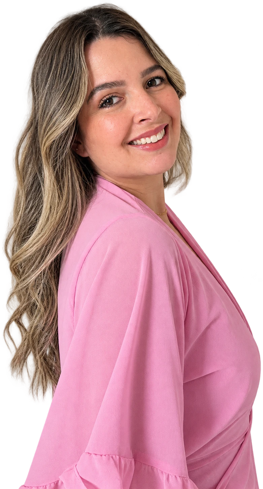

Prazer, sou a Yas
Minha história
 32 anos
32 anos Mãe do Bernardo
Mãe do Bernardo Moro no litoral de SP
Moro no litoral de SP Amo me cuidar e motivar mulheres
Amo me cuidar e motivar mulheres
Crio conteúdo para mulheres sobre autocuidado, de um jeito natural e com cara de conversa de amiga, mostrando que, mesmo na rotina corrida de cuidar de tudo e de todos, a gente não pode se esquecer de nós mesmas.
Cada vídeo é dinâmico, alinhado com a sua campanha e pensado para levar a mensagem certa e despertar desejo. Com um olhar analítico, transformo o seu produto em desejo de consumo: conteúdo autêntico que cria conexão real, gera autoridade e traz resultado.